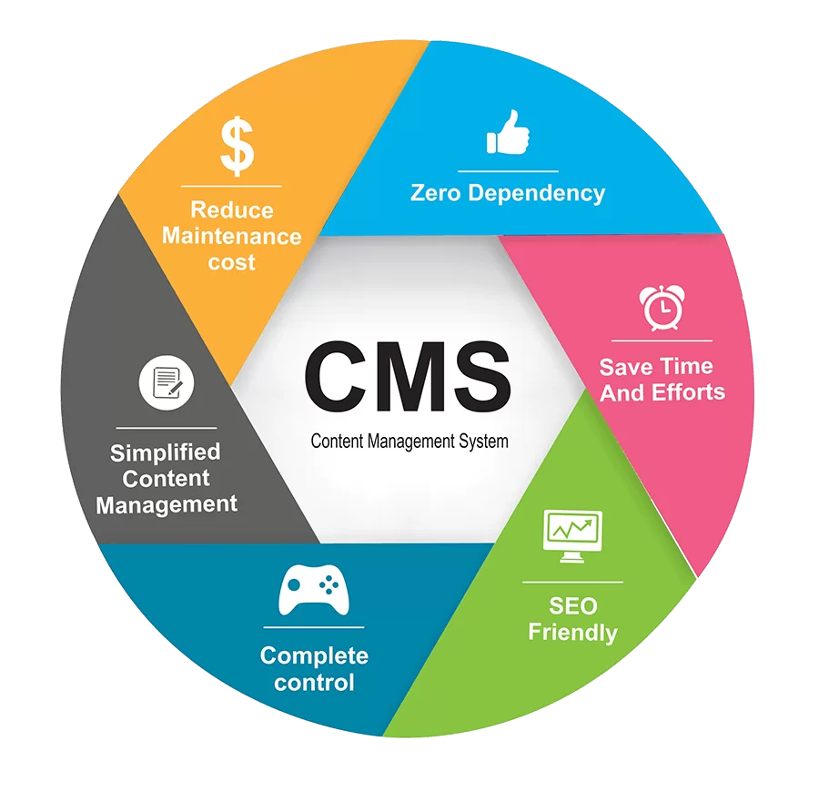

Процесс WEB-разработки
В начале 00-х произошло множество важных событий, предопределивших парадигму развития веба на многие годы вперёд:
Фронтенд и Бэкенд
Фронтенд — все, что браузер может читать, выводить на экран и / или запускать. То есть это HTML, CSS и JavaScript.
Бэкенд — все, что работает на сервере, то есть «не в браузере» или «на компьютере, подсоединенном к сети (обычно к Интернету), который отвечает на сообщения от других компьютеров».
Сегодня существует несколько основных архитектур, определяющих, как будут взаимодействовать ваши бэкенд и фронтенд.
Серверные приложения
В этом случае HTTP-запросы отправляются напрямую на сервер приложения, а сервер отвечает HTML-страницей. Между получением запроса и ответом сервер обычно ищет по запросу информацию в базе данных и встраивает ее в шаблон (ERB, Blade, EJS, Handlebars). Когда страница загружена в браузере, HTML определяет, что будет показано, CSS — как это будет выглядеть, а JS — всякие особые взаимодействия.
Связь с использованием AJAX
Другой тип архитектуры использует для связи AJAX (Asynchronous JavaScript and XML). Это означает, что JavaScript, загруженный в браузере, отправляет HTTP-запрос (XHR, XML HTTP Request) изнутри страницы и (так сложилось исторически) получает XML-ответ. Сейчас для ответов также можно использовать формат JSON.
Клиентские (одностраничные) приложения
AJAX позволяет загружать данные без обновления страницы. Больше всего это используется в таких фреймворках, как Angular и Ember. После сборки такие приложения отправляются в браузер, и любой последующий рендеринг выполняется на стороне клиента (в браузере). Такой фронтенд общается с бэкендом через HTTP, используя JSON- или XML-ответы.
Универсальные/изоморфные приложения
Некоторые библиотеки и фреймворки, например, React и Ember, позволяют исполнять приложения как на сервере, так и в клиенте. В этом случае для связи фронтенда с бэкендом приложение использует и AJAX, и обрабатываемый на сервере HTML.

WEB-сервера
Веб-сервер - это компьютер, на котором хранятся файлы сайтов (HTML-документы, CSS-стили, JavaScript-файлы, различный контент), и который доставляет их на веб-браузер на устройстве конечного пользователя. Также под веб-сервером понимается ПО, с помощью которого контролируется доступ веб-пользователей к размещенным на сервере файлам. Такое ПО называется HTTP-сервером и работает с URL-адресами и HTTP-протоколами. Основная задача веб-сервера - прием HTTP-запросов, их обработка и выдача HTTP-ответов на браузерах Google Chrome, Яндекс Браузер, Firefox, Internet Explorer, которые установлены в операционных системах пользователей. Также к задачам веб-серверов относятся создание журналов ошибок и обращений к файлам (логов), аутентификация и авторизация пользователей, использование настроек для обработки файлов.
AJAX - асинхронный JavaScript и XML
AJAX – технология, позволяющая взаимодействовать с сервером без перезагрузки страницы. Например, получать или передавать какие-нибудь данные. Естественно, каждое “обращение” к серверу заставляет браузер перезагружать страницу, ведь в этот момент он принимает данные и подготавливает их для передачи. Само по себе “обращение” это не только загрузка страниц сайта, “обращением” может быть и отправка сообщения пользователю, нажатие на кнопку “подписаться на новости” и.т.д. Так вот, AJAX помогает избежать постоянной перезагрузки страницы в пределах одного веб-сервера (сайта). Любой online-чат или форма обратной связи это явный пример работы технологии AJAX. Например, в социальной сети Вконтакте есть диалог с любым пользователем, в котором общение не прерывается перезагрузкой страницы.

HTTPS - Защищённая версия HTTP
HTTPS шифрует данные открытым ключом, а затем получатель расшифровывает его. Открытый ключ лежит на сервере и входит в SSL-сертификат. Сертификаты, в свою очередь, криптографически подписываются центром сертификации (ЦС). Каждый браузер имеет список доверенных ЦС. Любой подписанный центром сертификации сертификат, входящий в список доверенных, получает в адресной строке значок в виде зеленого замка. HTTPS является более современным и безопасным протоколом. Воздержитесь от ввода данных кредиток или другой чувствительной информации на сайтах, работающих по протоколу HTTP. Главная цель использования HTTPS является обеспечение безопасности и конфиденциальности. Все данные передаются только в зашифрованном виде. Поэтому использование HTTPS имеет смысл для сайтов любого назначения.
Системы управлением контентом (CMS)
CMS (от английского Content Management System) - система управления содержимым (контентом) - компьютерная программа или информационная система, которая используется для организации и обеспечения процесса по совместному созданию, управлению и редактированию содержимого сайта.Основной задачей такой системы является сбор и объединение в единое целое, на основе ролей и задач, различных источников информации. Эти источники могут быть доступны как внутри самой организации, так и вне её пределов. К тому же данная система обеспечивает возможность взаимодействия различных сотрудников, проектов и рабочих групп, с теми базами знаний и данных, которые были ранее созданы, в таком виде и таким способом, чтобы сделать процесс поиска и повторного использования максимально комфортным и привычным. В такой системе управления контентом определяется всё многообразие существующих данных: стандартные документы, музыка и звуки, видео, каталоги всевозможной информации и многое-многое другое. И именно для управления, хранения, обработки, просмотра и публикации таких данных различными группами пользователей и служат CMS. Отсюда кстати возникает и новый род профессиональной деятельности - контент менеджер, или проще говоря - редактор сайта
